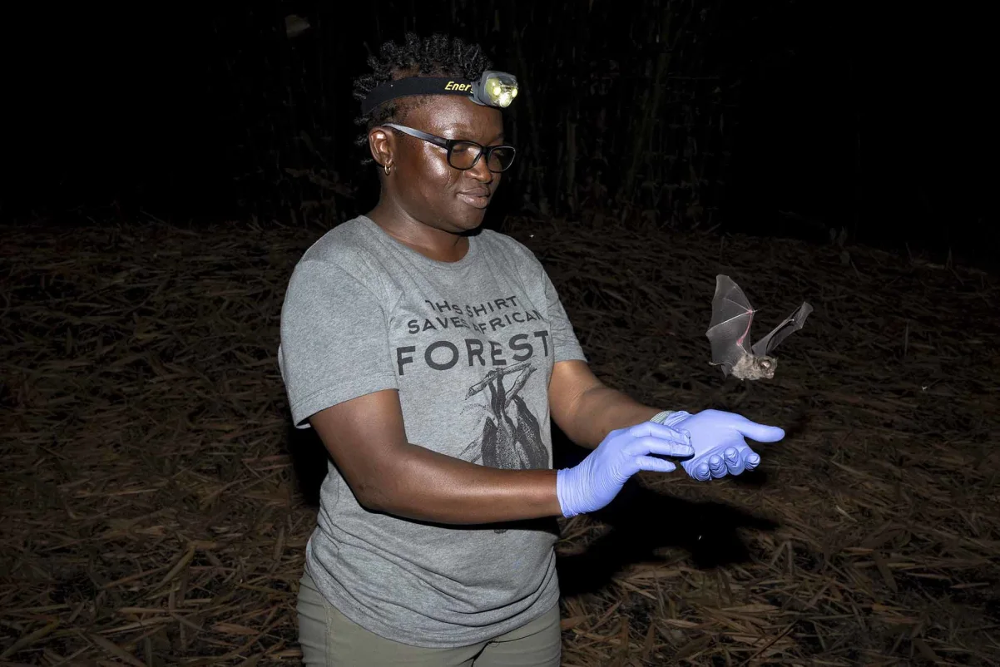

Nigerian conservationist Iroro Tanshi works to protect bats and forest ecosystems in Nigeria.
Her work helps preserve biodiversity and supports local communities.
She received the Goldman Environmental Prize for her efforts.
Forest guardians
Tanshi facilitated community-led wildfire management by installing weather stations for fire risk modeling and training local "forest guardians" for patrols, with efforts supported by educational programs.
These initiatives prevented 74 potential blazes between 2022 and 2025, securing the livelihoods of approximately 27,000 people. Following her Goldman Prize award, plans are in motion to expand these wildfire programs across Nigeria and other countries.
Read original article